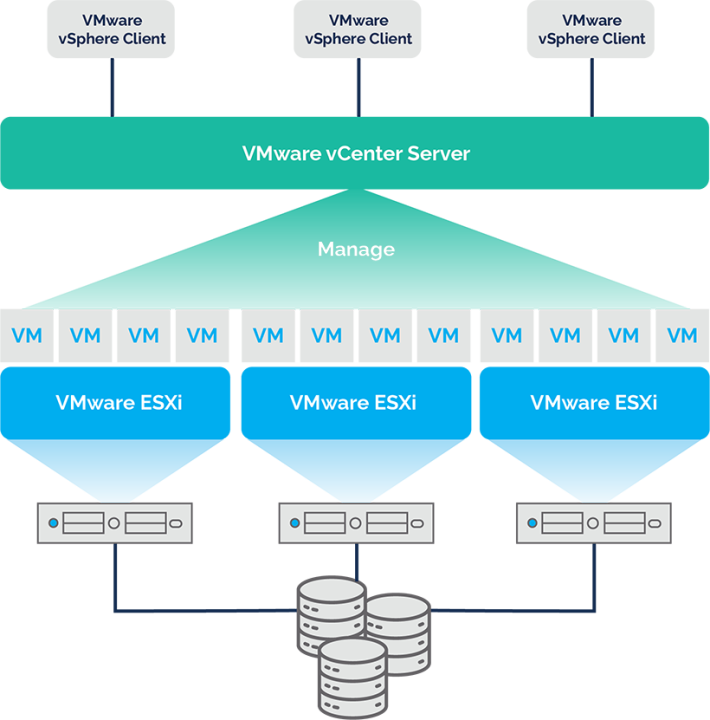
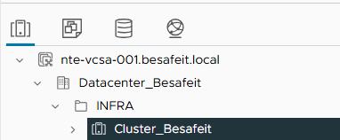
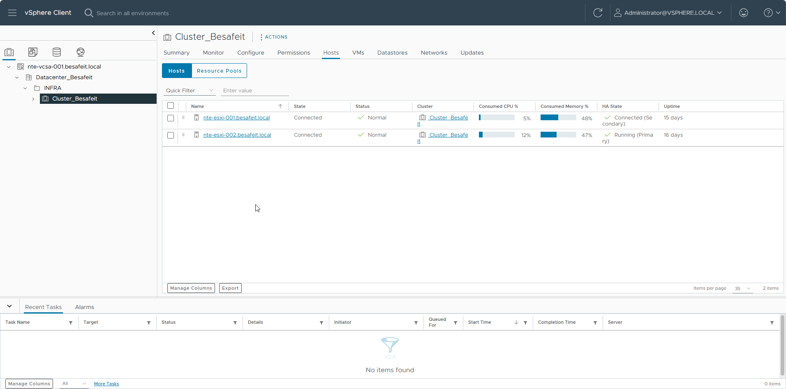
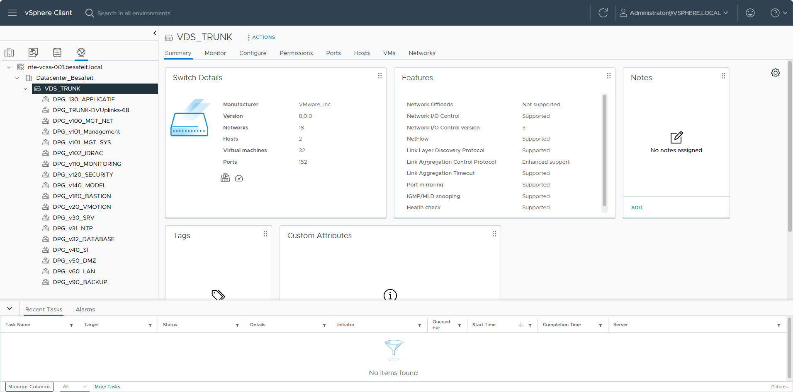
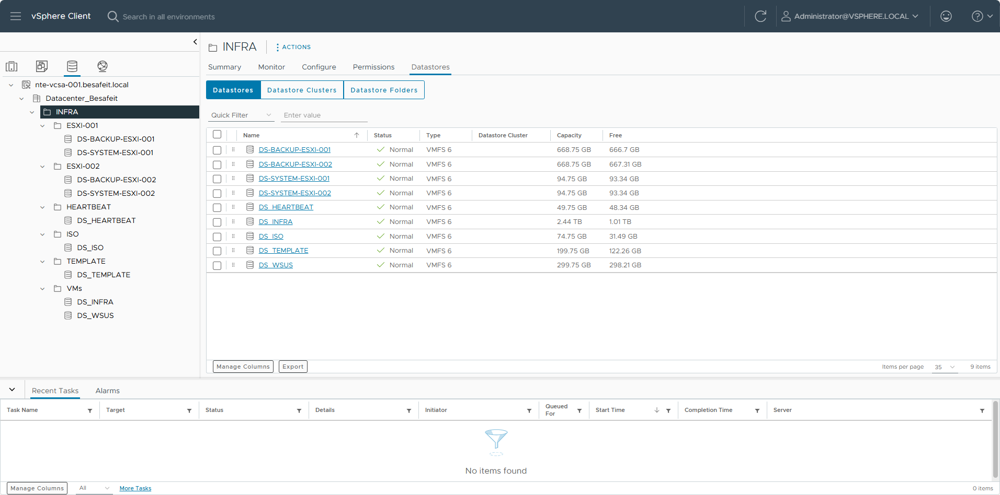
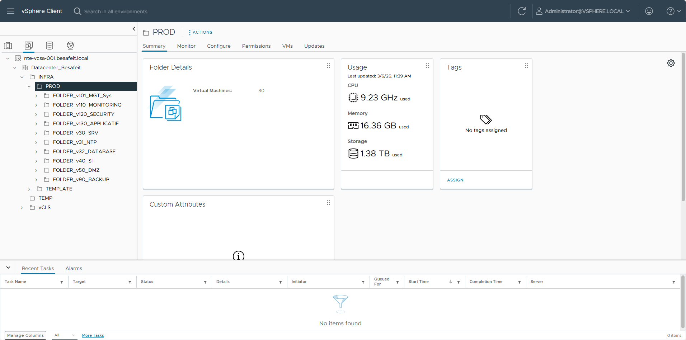

🖥️ Installation et configuration de VMware vCenter Server (VCSA)
Cette page décrit l’installation et la configuration initiale de VMware vCenter Server Appliance (VCSA) pour la gestion centralisée des hôtes ESXi du projet BESAFE.
⚙️ Détails techniques
| Élément | Valeur |
|---|---|
| Nom d’hôte | NTE-VCSA-001 |
| Adresse IP | 10.47.101.204 |
| Version | vCenter Server Appliance 8.0.2 |
| Hôtes gérés | NTE-ESXI-001 (10.47.101.201) – NTE-ESXI-002 (10.47.101.202) |
| Domaine | BESAFEIT.LOCAL |
| Système d’exploitation | VMware Photon OS |
| Rôle | Gestion centralisée du cluster ESXi BESAFE |
| Objectif | Supervision, clustering, gestion des ressources et des licences |
🧩 Étape 1 : Architecture vCenter BESAFE
Le vCenter Server Appliance (VCSA) constitue le point central d'administration de l'infrastructure VMware.
Contrairement aux hôtes ESXi qui exécutent les machines virtuelles, le vCenter permet de :
- centraliser la gestion des hôtes
- orchestrer les clusters
- gérer les réseaux distribués
- administrer le stockage
- superviser l'ensemble de l'infrastructure
Dans l’infrastructure BESAFE, le vCenter permet de piloter l’ensemble des ressources de virtualisation depuis une interface unique : vSphere Client.

Architecture logique
vCenter Server │ └── Datacenter_Besafeit │ └── INFRA │ └── Cluster_Besafeit ├── ESXi-001 └── ESXi-002

Cette organisation permet de structurer l'infrastructure VMware selon une hiérarchie logique :
- vCenter : gestion globale
- Datacenter : conteneur logique de l'infrastructure
- Cluster : regroupement des hôtes
- Hosts ESXi : hyperviseurs exécutant les VM
🖥️ Étape 2 : Cluster VMware

Le cluster Cluster_Besafeit regroupe les deux hôtes ESXi de l’infrastructure :
- nte-esxi-001.besafeit.local
- nte-esxi-002.besafeit.local
Ce regroupement permet de mutualiser les ressources matérielles :
- CPU
- mémoire
- stockage
- réseau
Fonctionnement d'un cluster VMware
Un cluster permet notamment d'activer plusieurs mécanismes essentiels :
High Availability (HA)
Si un hôte ESXi tombe en panne, les machines virtuelles peuvent être redémarrées automatiquement sur l'autre hôte.
vMotion
Les machines virtuelles peuvent être déplacées d'un hôte à un autre sans interruption de service.
Répartition des ressources
Les ressources CPU et mémoire sont partagées entre les hôtes.
Cette architecture garantit une continuité de service pour les machines virtuelles.
🌐 Étape 3 : Réseau distribué (VDS)
L'infrastructure BESAFE utilise un vSphere Distributed Switch (VDS) nommé : VDS_TRUNK
Contrairement aux vSwitch standards présents sur chaque hôte ESXi, un VDS centralise la configuration réseau au niveau du vCenter.
Avantages du VDS
- configuration réseau centralisée
- cohérence entre tous les hôtes
- simplification de l'administration
- meilleure visibilité du trafic réseau
Fonctionnement
Le VDS transporte l’ensemble des VLAN de l’infrastructure via un trunk réseau.
Les réseaux sont ensuite exposés sous forme de Distributed Port Groups (DPG).
Exemples de port groups :

Chaque port group correspond à un VLAN spécifique de l’infrastructure.
Les machines virtuelles se connectent à ces réseaux virtuels via leurs interfaces réseau.
💾 Étape 4 : Organisation du stockage
Le stockage de l'infrastructure VMware est organisé via plusieurs datastores VMFS.
Ces datastores sont partagés entre les hôtes ESXi afin de permettre :
- la migration vMotion
- la haute disponibilité
- la répartition des machines virtuelles

Un DATASTORE = une fonction L'objectif était de rendre les LUN et les DATASTORE clair à l'utilisation.
| Nom | Fonction |
|---|---|
| DS_INFRA | Les VMs de toute l'infrastructure BESAFE |
| DS_ISO | Toutes les images systèmes dont l'infrastructure à besoin |
| DS_TEMPLATE | Nos templates de VM |
| DS_HEARTBEAT | HA et DRS vCenter |
| DS_BACKUP | Nos sauvegardes, en local sur le serveur et sur le NAS |
| DS_SYSTEM | La partition système du serveur |
📁 Étape 5 : Organisation des machines virtuelles
Les machines virtuelles sont organisées dans des dossiers logiques afin de structurer l’infrastructure.
Cette organisation facilite :
- la lisibilité
- l'administration
- la gestion des permissions
Structure des dossiers

Chaque dossier correspond à un réseau ou un rôle spécifique dans l’infrastructure.
Exemples :
- MONITORING : supervision
- SECURITY : outils de sécurité
- DMZ : services exposés
- BACKUP : infrastructure de sauvegarde
Cette organisation permet de maintenir une infrastructure claire et structurée.
✅ Résumé global
| Étape | Objectif | Résultat attendu |
|---|---|---|
| 1️⃣ Architecture vCenter BESAFE | Centraliser l’administration de l’infrastructure VMware | Gestion unifiée via vSphere Client |
| 2️⃣ Cluster VMware | Regrouper les hôtes ESXi pour mutualiser les ressources | Haute disponibilité et orchestration |
| 3️⃣ Réseau distribué (VDS) | Centraliser la gestion réseau des hôtes ESXi | VLANs et port groups uniformisés |
| 4️⃣ Organisation du stockage | Structurer les datastores VMware | Stockage partagé pour les VM |
| 5️⃣ Organisation des machines virtuelles | Classer les VM par rôle et par VLAN | Infrastructure claire et maintenable |